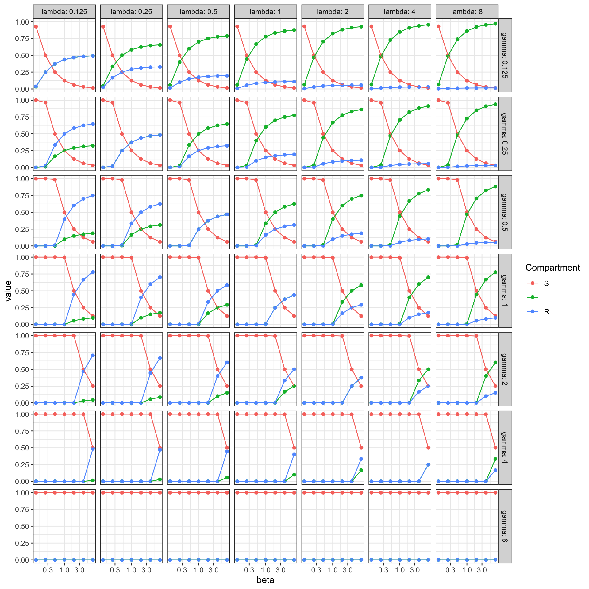

library('ggplot2')
library('tidyverse')
library('deSolve')
theme_set(theme_bw())SIRS model dynamics
R
Loading the required libraries
Simulate ODEs
sir_ode_deterministic <- function(t, state, pars) {
with(as.list(c(state, pars)), {
dS <- - beta * I * S + lambda * R
dI <- beta * I * S - gamma * I
dR <- gamma * I - lambda * R
return(list(c(dS = dS, dI = dI, dR = dR)))
})
}
infected_initial <- 0.5
initial_condition <-
c(S = 1 - infected_initial,
I = infected_initial,
R = 0)
step_length <- 1
max_time <- 100
timepoints <- seq(0, max_time, by = step_length)
grid_values <- 2^(-1:1)
grid_values <- 2^(-2:2)
grid_values <- 2^(-3:3)
result <- tibble()
for(beta in grid_values) {
for(gamma in grid_values) {
for(lambda in grid_values) {
parameters <- list(beta = beta,
gamma = gamma,
lambda = lambda)
solution <- ode(y = initial_condition,
times = timepoints,
func = sir_ode_deterministic,
parms = parameters) %>%
unclass %>% as_tibble
solution$beta <- beta
solution$gamma <- gamma
solution$lambda <- lambda
result <- rbind(result, solution)
}
}
}
result <- pivot_longer(result, cols = c('S', 'I', 'R'))
last <- result %>%
filter(time == max_time) %>%
mutate(name = factor(name, levels = c('S', 'I', 'R')))
last %>%
ggplot(aes(beta, value, colour = name)) +
geom_point() + geom_line() +
facet_grid(rows = vars(gamma),
cols = vars(lambda),
labeller = label_both) +
labs(xlab = 'beta', ylab = 'Fraction', colour = 'Compartment') +
scale_x_continuous(trans='log10')
last %>%
ggplot(aes(x = beta, y = value, fill = name)) +
geom_area() +
facet_grid(rows = vars(gamma),
cols = vars(lambda),
labeller = label_both) +
labs(xlab = 'beta', ylab = 'Fraction', fill = 'Compartment') +
scale_x_continuous(trans='log10')ss <- last %>%
group_by(beta, gamma, lambda) %>%
summarise(ss = sum(value))`summarise()` has grouped output by 'beta', 'gamma'. You can override using the
`.groups` argument.Analytical approach
Solution in terms of parameters in red.
Equilibrium conditions
\[ \begin{align} 1 &= S + I + R \qquad &(1) \\ 0 &= -\beta I S + \lambda R \qquad &(2) \\ 0 &= \beta I S - \gamma I \qquad &(3) \\ 0 &= \gamma I - \lambda R \qquad &(4) \end{align} \]
Algebraic transformation
\[ \begin{align} R &= 1 - S - I \qquad &(1b) \\ S &= \gamma / \beta \qquad &(3b) \end{align} \]
Plugging in
\[ \begin{align} (3b) \rightarrow (2): \quad I &= \lambda / \gamma R \qquad &(5) \\ (1b) \rightarrow (5): \quad I &= \frac{\lambda(\beta - \gamma)}{\beta(\gamma + \lambda)} \qquad &(6) \\ (3b) + (6) \rightarrow (1b): R &= \frac{\gamma(\beta - \gamma)}{\beta(\gamma + \lambda)} \qquad &(7) \end{align} \]
Plots
last_w <- pivot_wider(last, names_from = name, values_from = value)
last_w$S_calc <- pmin(1, last_w$gamma / last_w$beta)
last_w$I_calc <-
pmax(0, pmin(1, with(last_w, (lambda * (beta - gamma))) /
(beta * (gamma + lambda))))
last_w$R_calc <-
pmax(0, pmin(1, with(last_w, (gamma * (beta - gamma)) /
(beta * (gamma + lambda)))))
last_w$I_calc <- 1 - last_w$S_calc - last_w$R_calc
last <- last_w %>%
pivot_longer(cols = c('S_calc', 'I_calc', 'R_calc'))
last %>%
ggplot(aes(x = beta, y = value, fill = name)) +
geom_area() +
facet_grid(rows = vars(gamma),
cols = vars(lambda),
labeller = label_both) +
labs(ylab = 'Fraction', xlab = 'beta', colour = 'Compartment') +
scale_x_continuous(trans='log10')